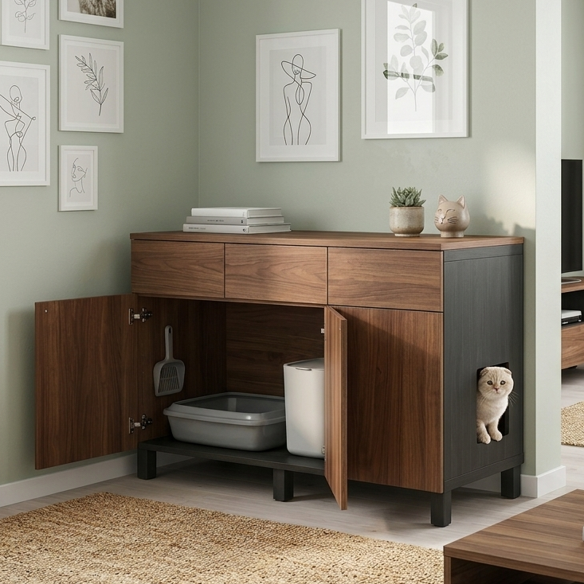
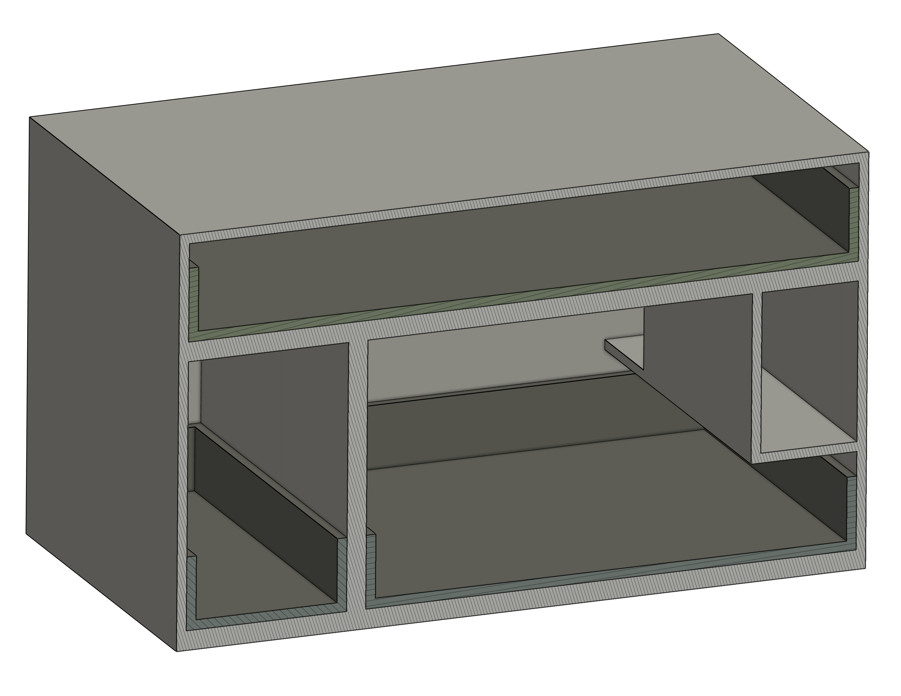
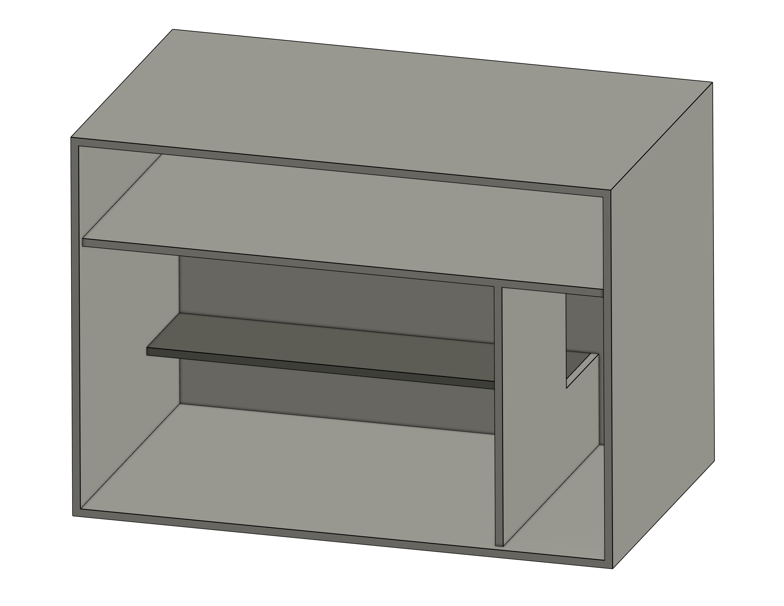
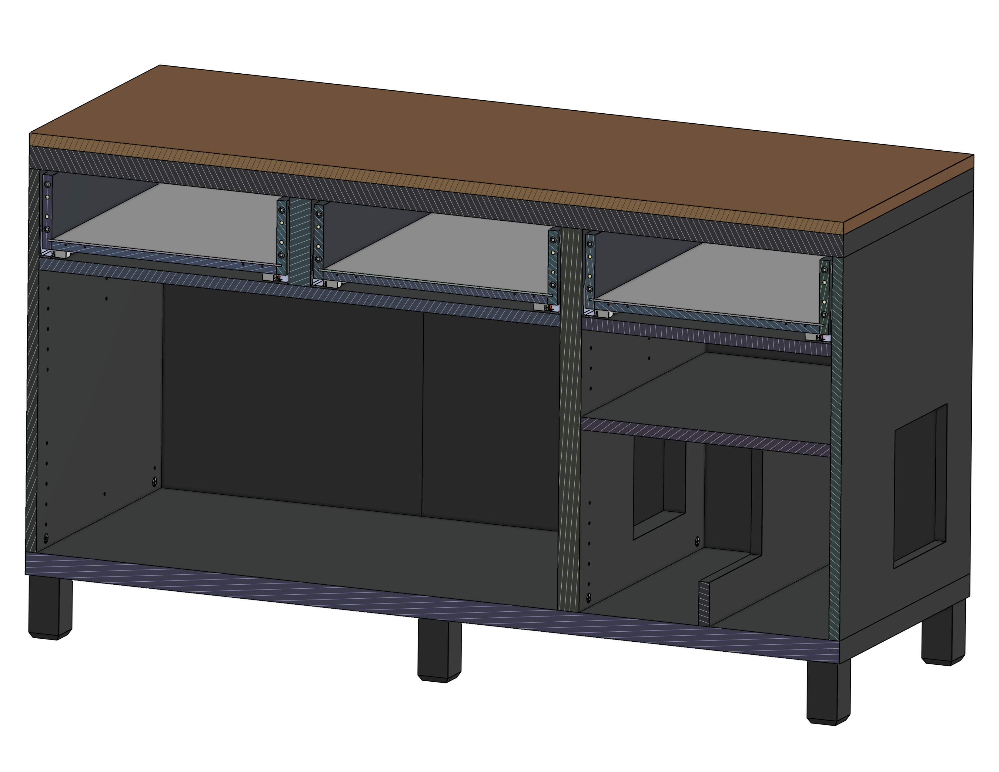
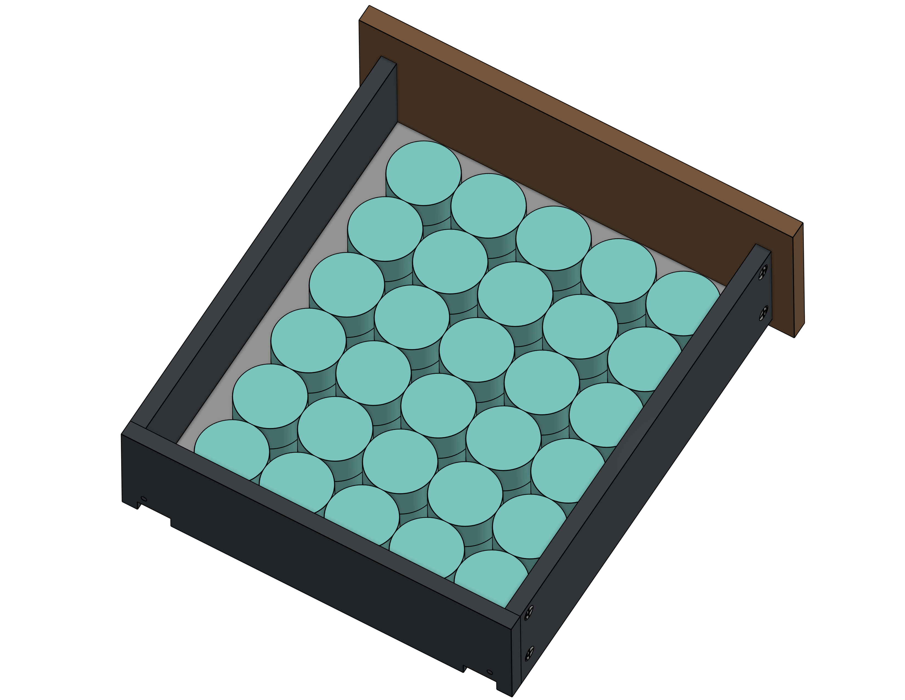

Overview
The problem with every litter solution on the market
Cat owners go through the same journey. The litter box starts in the bathroom — out of sight, but litter ends up everywhere, so you buy a mat that barely helps. The mess becomes unbearable, so you invest in an enclosure. Now it looks cleaner, but the mat is still there, the litter trashcan is still sitting out in the open, and your setup still occupies a disproportionate footprint in your home.
Every enclosure on the market solves only one thing: hiding the litter box. None address where the waste goes, how litter gets tracked beyond the entrance, or what the product looks like in a real living room. Most are styled with cat-themed cutouts and barn-door silhouettes — decorative signals that announce rather than conceal their purpose.
"Imagine a piece of furniture you'd put in your hallway that also happened to contain everything cat litter–related — and you'd never know it."
This project set out to design exactly that.
The Challenge
Four problems, no complete solution
Existing products treat these as separate issues. This design treats them as one system.
It doesn't look like furniture
Cat-themed cutouts and rustic barn styling signal their purpose immediately. No current product could blend into a modern living room or hallway.
Exposed waste storage
Every enclosure hides the litter box. None account for the dedicated waste bin (Litter Genie, Litter Zero) that lives right next to it.
Litter tracking
No mat or enclosure stops cats from carrying litter beyond the exit. The problem isn't the type of litter you use — it's exit path geometry.
Wasted real estate
A litter box, enclosure, mat, and waste bin together consume significant floor space with zero storage return for the owner.
Competitive Analysis
What the market actually offers
A review of top-selling litter enclosures on Amazon, Chewy, and Wayfair revealed that every product makes the same scoping decision: hide the litter box, ignore everything else.
| Photo | Product | Furniture aesthetic | Hides waste bin | Litter trapping | Extra storage | Price |
|---|---|---|---|---|---|---|

|
Tucker Murphy Pet | ✓ | ✗ | ✓ | ✓ |
Mid $190 |

|
Halitaa | ✓ | ✗ | ✓ | ✗ |
Budget $110 |

|
Homhedy | ✓ | ✗ | ✗ | ✗ |
Budget $80 |

|
Hoobro | ✗ | ✗ | ✓ | ✓ |
Budget $115 |

|
Ebern Designs | ✗ | ✗ | ✓ | ✗ |
Mid $250 |

|
Litter-Robot (automatic) | ✗ | ✓ | ✗ | ✗ |
Premium $600–900 |

|
Lifewit | ✗ | ✗ | ✗ | ✗ |
Budget $70 |
|
 |
This design | ✓ | ✓ | ✓ | ✓ |
Mid ~$249–399 |
Most enclosures solve one thing: hiding the litter box. No competitor addresses waste bin storage. A few address litter tracking, but a single straight corridor isn't enough. Some offer extra storage but it's rarely enclosed. The Litter-Robot handles waste automatically but costs $600–900, requires power, and reads as an appliance, not furniture. Tucker Murphy Pet furniture comes closest, but leaves the waste bin exposed and the exit path too short to prevent tracking.
Research & Discovery
Constraints worth engineering around
Before sketching anything, I established the non-negotiable dimensional and ergonomic requirements — for the cat, for common cleaning hardware, and for the space itself.
Design constraints
Must fit a large litter box
The interior chamber needed to accommodate the largest commonly sold enclosed litter boxes — not just a standard size — so the design wouldn't exclude cats that require extra space or owners already invested in a specific box. This set the minimum interior width and depth of the litter compartment.
Must accommodate a litter waste bin
The Litter Genie and Litter Zero are the most common dedicated litter waste bins. Their dimensions set the additional space needed to have it stored next to the litter box of the main compartment. This was non-negotiable — it was the core gap the entire design was built to close.
Ventilation without sacrificing aesthetics
An enclosed litter area traps ammonia from cat waste, which can discourage use and is a health concern over time. The enclosure needed a passive ventilation solution — whether through gap geometry, louvres, or a hidden charcoal filter — that didn't introduce visible cutouts or grilles that would undermine the furniture aesthetic.
The cat must easily find and access the litter box
If the entry path is confusing, poorly lit, or physically demanding, cats will avoid the enclosure and eliminate elsewhere. The corridor geometry, entry aperture, and step-over height all had to be optimised for instinctive, frictionless use. A cat who is unsure or uncomfortable will not use it.
Must fit in an apartment — minimum footprint, full functionality
The target user lives in a 600–900 sq ft urban apartment. Every square inch the enclosure occupies has to earn its place. The design was sized to the smallest viable footprint that still satisfied constraints C1 through C4 — no dimension was generous by default.
Surplus storage — useful beyond cat ownership
The enclosure had to justify its footprint to non-cat-owners in the household too. Drawers, shelves, or cabinet space for non-cat items — blankets, cleaning supplies, books — make the piece furniture first, cat product second. This is also what allows it to live in a living room rather than a utility room.
Modular — swappable panels, legs, and finishes
IKEA's success is partly built on mix-and-match modularity: owners personalise their furniture without replacing the whole piece. This design follows the same principle — tabletop colour, base colour, door and drawer faces, leg height, and textures are all independently swappable. This expands the addressable market significantly without increasing manufacturing complexity.
Feline ergonomics
Based on guidelines from International Cat Care and the American Association of Feline Practitioners, the enclosure's interior needed to meet minimum standards for a cat of any age or mobility level — not just a healthy adult.
| Requirement | Spec (in) | Spec (cm) | Rationale |
|---|---|---|---|
| Litter box headspace | 15″ – 20″ | 38 – 51 cm | Full standing, turning, and periscoping |
| Tunnel / corridor diameter | 8″ – 10″ | 20 – 25 cm | Neutral spine posture while walking through |
| Walk-over height | 3″ – 5″ | 7.5 – 12.5 cm | Accessible for senior and mobility-limited cats |
| Step-down height | 5″ – 7″ | 12.5 – 17.8 cm | Reduces forelimb load for older cats on descent |
User insights
Reviewing community discussions and walkthroughs of how real cat owners manage their setups revealed two consistent patterns:
Litter tracking is universal regardless of type — fine-grain litters like clay or crystal cling to paws for up to 20 feet, while heavier pellets drop within 2 feet but still need a mat at the exit. The mat itself becomes a problem: wasted floor space, an obstacle to step over, another surface to clean. Owners consistently said they'd rather vacuum a contained corridor than chase litter across their home. Secondly, almost every setup looks identical: litter box, some concealment, a waste bin in the open, all sitting on a mat that only partially helps. The problem is systemic — no product on the market fully conceals the litter setup and passes as real furniture.
Who This Is For
The primary user
The design targets a specific type of cat owner — one who has already tried the standard progression of solutions and is still unsatisfied. They're not looking for a novelty product. They want something that solves the problem completely and doesn't embarrass them aesthetically.
The Design-Conscious Cat Owner
27–38 · Urban apartment, 600–900 sq ft · One or two cats · $65K–$110K income
"I want to keep my living space clean and intentional, but every litter solution I've tried either looks obviously cat-related or only solves part of the problem — and I'm still finding litter on my couch."
The Solution
One piece. Four problems solved.
The design is a furniture-grade enclosure with a clean top surface, neutral material finish, and no cat-signaling aesthetic cues. From the outside, it reads as a credenza or hallway cabinet. Inside, it contains an engineered system for every problem the existing market ignores.

Concept render — interior visible with example litter box and waste bin setup.
Ideation & early decisions
Three layout concepts were developed and evaluated against the seven design constraints before committing to CAD.

Option A — Rejected Smaller footprint with front entry and vertical drawer stack.

Option B — Rejected Smaller footprint with raised rear catwalk over litter box.

Option C — Chosen Expanded footprint with U-shaped maze and four storage sections.
Option A explored a front cat entry and a slide-out litter box tray at the base. Rejected — the door arrangement was structurally awkward, the walkway lacked support, and it became clear a dedicated waste bin compartment added unnecessary complexity.
Option B targeted a smaller footprint with no waste bin compartment, adding a raised catwalk over the litter box to capture litter passively. Rejected — the catwalk blocked litter box access at low heights, and raising it created a drop steep enough that cats would kick litter on the jump. The entry zone also left significant unusable dead space regardless of shelving.
Option C expands the footprint deliberately: a U-shaped maze creates three forced direction changes before exit, depositing litter inside the enclosure rather than outside. The additional volume is distributed across four storage sections with no wasted space. It is the largest of the three concepts — and the only one that satisfies every constraint without compromise.
The trade-off is footprint. The U-shape adds width. But the calculus is clear: it is far preferable to vacuum a contained corridor than to chase litter all over your living space.
Define the full problem scope
Before sketching, I listed every object in a typical cat owner's litter setup: box, enclosure, mat, waste bin, scooper, cleaning supplies. The design brief became: contain all of it in one piece of furniture.
Establish non-negotiable constraints
Seven constraints were locked before any layout decisions: litter box size, waste bin size, ventilation, cat accessibility, apartment-sized footprint, owner storage utility, and modular finishes. These drove every dimension in the CAD model rather than being retrofitted later. See the constraints section above for the full breakdown.
Solve litter tracking geometrically
The maze corridor emerged from asking: what if the entry path itself were the litter mat? A straight tunnel was ruled out — cats can exit in 1–2 leaping strides. A top-entry hatch was ruled out for accessibility and because litter still cascades out on exit. The U-shape forces three direction changes and maximises steps taken inside.
Model in Onshape
With layout logic validated, the full design was modelled in Onshape. Panel thicknesses were set at ¾″ (19mm) to match standard furniture-grade plywood. All interior clearances were verified against the feline ergonomics table before finalising dimensions.
Assembly & construction
The CAD model was developed with assembly clarity in mind — each component is a discrete panel or sub-assembly that maps to a logical build sequence.

Exploded view of furniture showing how every piece fits together.

Dimensioned CAD drawing.
The enclosure is built from 18mm, 20mm, and 36mm particle board, joined via cam-lock hardware for flat-pack assembly — the same construction method as IKEA's cabinet lines. The design shares IKEA's core principle: well-made, functional furniture that is affordable to as many people as possible, with surfaces that are individually swappable rather than requiring a full replacement.
Bill of materials
Every component in the design — panels, fasteners, cam-locks, hinges, drawer slides, legs, and screws — is fully specified in the Onshape model. Each part is parametric, meaning a change to a panel thickness or leg height propagates through the entire assembly automatically.
| # | Component | Material / Spec | Qty | Notes |
|---|---|---|---|---|
| 1 | Back panel large | 3mm High-Density Fiberboard (HDF) | 1 | — |
| 2 | Back panel small | 3mm HDF | 1 | — |
| 3 | Bottom panel | 36mm Medium-Density Fiberboard (MDF) | 1 | — |
| 4 | Column 1 | 18mm particle board | 1 | — |
| 5 | Column 2 | 36mm particle board | 1 | — |
| 6 | Column 3 | 36mm particle board | 1 | — |
| 7 | Column 4 | 18mm particle board | 1 | — |
| 8 | Column 5 | 18mm particle board | 1 | — |
| 9 | Top panel | 36mm particle board | 1 | — |
| 10 | Bottom shelf small | 20mm particle board | 1 | — |
| 11 | Top shelf large | 20mm particle board | 1 | — |
| 12 | Top shelf small | 20mm particle board | 1 | — |
| 13 | Tabletop | 20mm particle board | 1 | Swappable for different colors and styles |
| 14 | Drawer runner right | Steel, full-extension | 3 | Blum 563H4570B |
| 15 | Drawer runner left | Steel, full-extension | 3 | Blum 563H4570B |
| 16 | Drawer face | 18mm particle board | 3 | — |
| 17 | Drawer back wall | 18mm particle board | 3 | — |
| 18 | Drawer support bar | 16mm particle board | 3 | — |
| 19 | Drawer base | 3mm particle board | 3 | — |
| 20 | Drawer side wall | 18mm particle board | 6 | — |
| 21 | Drawer locking device, right | Plastic | 3 | Blum T51.1901.PS |
| 22 | Drawer locking device, left | Plastic | 3 | Blum T51.1901.PS |
| 23 | Door | 18mm MDF | 3 | — |
| 24 | Door Hinge | 35mm cup hinge, soft-close | 6 | Blum 71B3550 |
| 25 | Leg | Solid wood | 6 | IKEA STUBBARP |
| 26 | 28mm Cam Dowel | Zinc alloy | 40 | — |
| 27 | 11.5mm Cam Lock | Zinc alloy | 32 | — |
| 28 | 18.5mm Cam Lock | Zinc alloy | 8 | — |
| 29 | 6mm×50mm Dowel Peg | Hardwood | 14 | — |
| 30 | 6mm×30mm Dowel Peg | Hardwood | 26 | — |
| 31 | Flat Head Screws for Particleboard | Black-Oxide Steel, #6 Size, 1-1/8" | 12 | — |
| 32 | Rounded Head Screws for Plywood | Zinc-Plated Steel, #6 Size, 1/2" | 42 | — |
| 33 | Tapping Inserts for Softwood Flanged | Zinc Alloy M8 × 1.25mm Thread, 20mm Installed Length | 6 | — |
U-shaped maze corridor
The single most effective change was rethinking the entry path. A traditional straight exit lets a cat leave in one or two strides — and litter follows. Replacing it with a U-shaped corridor introduces three forced direction changes, breaking the straight-shot exit that causes tracking. Short tactile lips at each turn shift the cat’s gait and two strips of honeycomb trapping mats (accessories) lining the floor guarantee all loose litter is deposited inside the maze.
The trade-off is footprint. The U-shape adds width. But the calculus is clear: it is far preferable to vacuum a contained corridor than to find litter all around your house.

The white arrow shows the path cats will take to exit.

Sample layout of litter box and waste bin setup.
Built-in waste bin compartment
Every competing enclosure hides the litter box and leaves the waste bin sitting in the open. This design accounts for it from the start — a dedicated compartment fits a Litter Genie, Litter Zero, or equivalent, enclosed behind a door, accessible alongside the litter box. The waste bin is finally off the floor and out of sight.
Generous owner storage
No volume is wasted. Four enclosed storage areas — three drawers at the top and one shelf above the maze — give back the floor space the enclosure takes. Each drawer fits over 60 small wet food cans with room to spare. In practice that means cat supplies, cleaning tools, or anything else you'd otherwise leave on a shelf. The enclosure earns its footprint in both directions.

60 small puck cat wet food cans in a drawer with plenty of spare room.

Front view — ventilation holes along the top of the back panel.
Passive ventilation
An enclosed litter space traps ammonia — the primary odour compound in cat waste. Left unaddressed, buildup discourages cats from using the box. A row of ventilation holes runs along the top of the back panel, with matching holes on the interior column walls at the same height. These accept accessory trays for zeolite bags or loose charcoal, absorbing ammonia without powered fans or visible grilles. The vents sit behind the furniture — no aesthetic compromise.
Hardware-free front face
Drawers and doors use push-to-open latches, keeping the entire front face flush and handle-free. The result reads as furniture — Japandi, Scandinavian, or contemporary — not as a cat product. From the front, nothing gives it away. The only visible signal is a rounded cutout on the right side panel: the cat's entry. Everything else is indistinguishable from a credenza you'd find in a living room.

Isometric view with drawer and door panels.

All compartments open.
Swappable legs
The enclosure sits on swappable legs rather than a fixed base. Leg height serves two purposes at once: aesthetic and functional. Shorter legs lower the entry step-up height, making the box accessible to senior or mobility-limited cats without changing anything else about the design. Taller legs open up ground clearance — enough to clean underneath or fit a robot vacuum charging dock.
Leg style is independently swappable too, so the same cabinet body can shift between a tapered mid-century silhouette and a low-profile Scandinavian look just by changing the legs.
Usable top surface
The top of the enclosure is flat, clean, and load-bearing — designed for plants, books, a lamp, or any decorative object that makes the surface feel intentional. The tabletop is swappable, so owners can change the finish without replacing the whole piece. If budget is a consideration, it can be left off entirely.

Swappable tabletop to customize the look and feel.

Flat-pack configurations.
Flat-pack and modular assembly
The enclosure ships in a single flat-pack box. Structural panels — the cabinet body, shelves, and internal maze walls — are in the main carton. Door faces, drawer fronts, the tabletop, and legs ship separately, letting buyers choose their own finish combination before assembly.
This mirrors IKEA's model: the core structure is fixed, but every visible surface is swappable. A buyer can start with a white oak top and natural legs, and update the door faces two years later without replacing the whole piece.
Design specifications
| Parameter | Value |
|---|---|
| Approximate footprint | 126cm × 52cm × 80cm |
| Interior litter headspace | 45cm |
| Maze height | 29cm |
| Entrance height | 10cm (without legs) |
| Ventilation | Passive — concealed back-panel vents |
| Leg height | Modular — short (5cm), standard (10cm), tall (15cm) variants |
| Assembly method | Flat-pack, cam-lock hardware |
| Litter box capacity | Accommodates 60cm × 40cm litter box footprint, with space for waste bin alongside |
| Waste bin compartment | Accommodates 27cm × 27cm waste bin footprint (Litter Genie / Litter Zero) |
| Modeled in | Onshape — all panels, hardware, and fasteners fully parametric |
| Bill of materials | Complete — every screw, cam-lock, and bracket specified with part number and quantity |
Market Opportunity
Why this product has a clear path to market
The automatic litter box market — products like Litter-Robot — has proven that cat owners will pay a significant premium to reduce daily maintenance. This design targets the same buyer at a lower price point, without requiring power, connectivity, or proprietary consumables.
The aesthetic positioning opens a distribution channel no current litter enclosure occupies: the home furnishing aisle. IKEA, West Elm, and Crate & Barrel already sell furniture to the exact demographic who owns cats and cares how their home looks. No litter product currently lives in that aisle.
At a target retail price of ~$349 in a flat-pack format, the enclosure sits above commodity enclosures ($50–$150) but well below the automatic litter box segment ($500–$900). It earns its price through solved problems rather than electronics — and can reach buyers through both pet-specialty and home furnishing channels simultaneously.
Reflection
What this project taught me
The insight
The most important design decision wasn't aesthetic — it was the maze geometry. A straight path felt like the obvious choice for cat accessibility. Rethinking it as a litter-capture mechanism changed the entire interior layout. The constraint became the feature.
Systems thinking
Existing products were designed around a single pain point. Designing around the entire ecosystem — litter, waste, storage, ventilation, cat accessibility, and owner aesthetics — produced a solution that no individual feature could have reached on its own.
The gap in the market
The research confirmed that no product in this category publishes a diagram showing where the waste bin goes. That omission isn't an oversight — it reflects a fundamental scoping decision that every existing product has made. Expanding that scope was the project.
If I had more time
A physical prototype would validate the maze corridor dimensions against real cats — specifically whether the U-turn geometry eliminates litter tracking with any litter type. I'd also like to explore a shorter front-entry variant for tight spaces, a multi-cat variant, and a taller interior clearance option for larger automatic litter boxes — all without compromising functionality or aesthetics.
Sources
References
| Claim | Source |
|---|---|
| Feline litter box headspace and ergonomic minimums | International Cat Care (iCatCare); AAFP Senior Care Guidelines |
| Competitor pricing and feature data | Amazon, Chewy, and Wayfair product listings, verified April 2026 |
| US pet industry annual revenue (~$165B) | Mordor Intelligence, US Pet Market Analysis 2026–2031 |
| Cat-owning households in the US (~46M) | APPA National Pet Owners Survey; Catster 2026 Update |
| Global pet furniture market size (~$7.95B, 2026 projection) | Coherent Market Insights, Global Pet Furniture Market Size & Trends 2026–2033 |